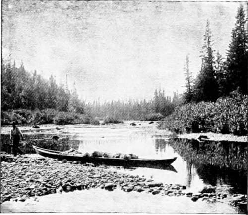
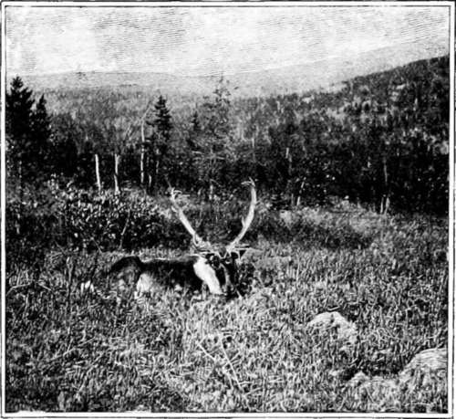
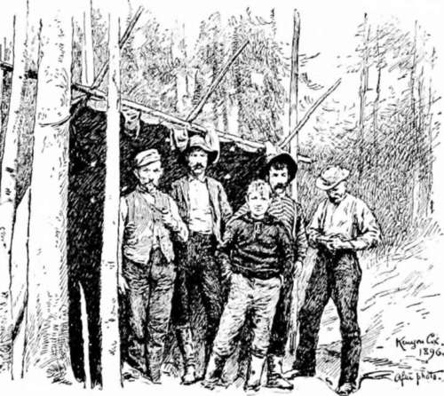

Sport In An Untouched American Wilderness. Part 5
Description
This section is from the book "Hunting", by Archibald Rogers. Also available from Amazon: Hunting.
Sport In An Untouched American Wilderness. Part 5
The famous interior fishing-grounds of the United States are pretty nearly done for. In fact, nothing is so fatal to the fish as notoriety. But the resources of the remote waters of old Acadia are unimpaired. The mountain lakes contain trout in surprising numbers. The oceangoing streams of this peninsula are the finest salmon waters on the Atlantic coast. On all the accessible lower reaches of the streams, down near the coast, fishing-clubs control the privileges. But back in the distant hills, where travel is difficult, there are pools unwhipped by the angler's fly, where the summer assemblage of aristocratic fishes is a marvellous thing to see. The danger to the salmon, of course, lies in the fact that, like the wild-duck, he is a migratory being. If he would stay up in his summer home all the year, then nothing would disturb him. But every season he must run the gantlet of the tide-water nets, of which there are a great number. The fish-laws of the Dominion allow each riparian owner on tide-water to put out a pound-net not exceeding in length one-third the width of the channel. For thirty or more miles the tide rushes up from the sea, and some of these streams are very wide as far up as tidal action extends. To the canoeist on these lower reaches it seems incredible that a single fish could escape the manifold dangers of travel through the maze of nets. But a great number do. The summer of 1895, owing to the lowness of the water, was a very bad salmon year. Yet an overland journey to the head of one of the remote tributaries of the Miramichi water system, in July, enabled us to see, in the rocky basins of the river, conventions of salmon which must have numbered thousands of individuals. Camped by the side of one of these big pools, the constant splashing made by the jumping fish was disastrous to sound sleep. The heavy, sloppy blow struck by a fifteen-pound salmon, as he tumbles back against the surface of the pool, after leaping three feet out, is an impressive sound. When it is repeated, on an average, once a minute all night long, it is calculated to make an angler feel that he is in the immediate presence of his friends.
On the Little Southwest Miramichi River.
Caribou lying down.
One's first salmon is an event. I got mine all alone. It was on the Dungarvon, on my way into the more remote interior. In a clear pool we could see the green backs of the fish, big and little; but they were not after our flies. The others went up the stream a considerable distance, and I remained by the pool. It needs two men to land a salmon. Presently I began idly casting, just to try my new eighteen-foot rod; and the first thing I knew a fish was hooked. He galloped around that pool, jumping out, darting back and forth, and I waded right in. After a while I got him pretty tired. I had no landing-net or gaff, but there was a smooth gravel bar forty rods below. After a while I towed the unfortunate fish down there, got him headed for shore, and ran straight back on the bar. Out he came, flopping somersaults on the gravel. The gut leader broke; but I threw myself on top of that salmon, and clasped my arms around him. He was slippery and strong, and I could not hold him. Finally I got my fingers in his gills, reached for a stone, and gave him three or four merciless whacks over the head. Then I had him. I was a sight to behold, wet and bespattered with mud and slime; but I was too proud, as well as too nearly out of breath, for words.
Most of these streams are not readily navigable for birch-bark canoes. Horses cannot be used for the transportation of camp luggage, because there is scant feed for them. The sportsman who would penetrate to the heart of the old Acadian wilderness must nearly always do at least fifty miles of honest walking over blazed trails, through trackless swamps, across bushy mountains covered with fallen timber. He must ford unbridged streams, and his guides must carry the entire camp outfit on their backs.
There are, in the unsubdued fastnesses of the Cow Mountains and other far-away portions of New Brunswick, such dense tangles that the most determined traveller cannot possibly make more than five miles' progress in a day, over the fallen trunks, and through the thick growths. If one could travel as the bear does, on all-fours, he would do better.
Last fall, having come down an unfrequented river in a dugout constructed in the interior, Mr. Braithwaite and myself made an evening camp just at the edge of the sparse settlements which extend for some miles up the stream. The next morning a native, looking for his stray cattle, came upon us, and asked: "Didn't you come down here eight years ago?"
Mr. Braithwaite said this was the fact. The farmer then remarked: "My boy saw your canoe in the river last night, and we remembered that you came down in one like it eight years ago." He said further, that, so far as he knew, no strange canoe had come down from the unexplored headwaters of the stream in the meantime. This incident illustrates the infrequency of travel on those boisterous mountain rivers, and is also a fine example of the bushman's accuracy of observation and inference.
Undoubtedly some of this unoccupied domain, in common with other portions of the great Canadian wilderness, will some day be filled with human habitations; but the interesting fact remains that a vast region of surpassing beauty will probably forever continue unmarred by settlement, an impregnable game preserve. Myriads of cataracts and cascades will roar unheard. Thousands of lonely lakes will smile in the summer sun, or sleep quietly under winter's covering, unvisited, except at long intervals, by man. And as the Acadian forests have survived the possession of the savage, the Gaul, and the Briton, so they will remain unharmed long after the next obvious change in the map of North America; and forest, lake, mountain, and stream will continue a perpetual joy to the hardy sportsman and the gentle lover of Nature for Nature's sake.
Continue to: